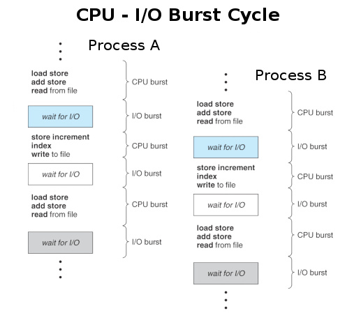
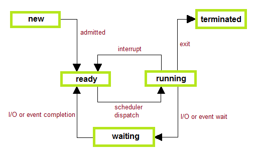
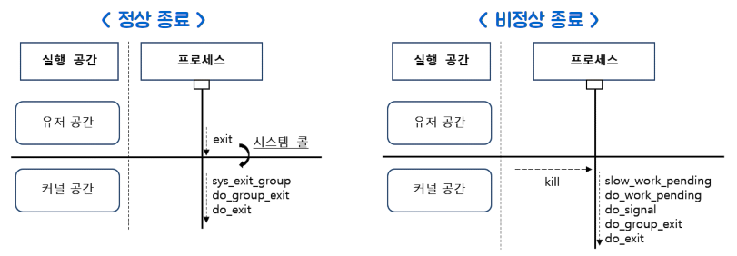
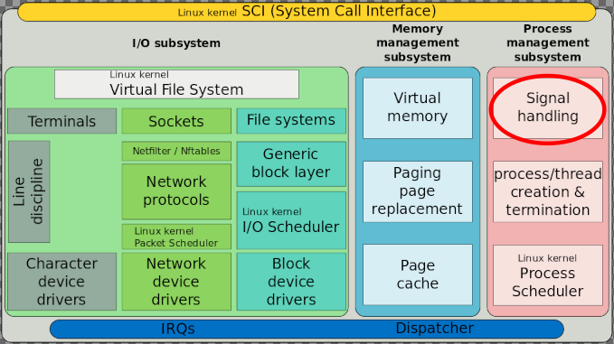
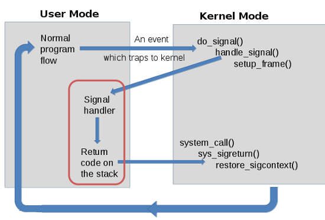

Signals and Traps
하드웨어가 인터럽트에 의해 운영된다면 소프트웨어는 시그널에 의해 운영된다고 할 수 있습니다. 시그널이라는 기능이 없다면 오류로 무한 루프를 도는 프로세스를 정지시킬 수도, 종료시킬 수도 없고 child process 가 종료되었을때 parent process 에게 알릴 수도 없습니다. 시그널은 프로세스에 전달되는 software interrupt 라고 할 수 있습니다. OS 내에 정의되어 있고 여러가지 system events 가 발생했을때 프로세스에 알리기 위해 사용됩니다. 스크립트 실행중에 Ctrl-c 키를 누를때, 터미널 프로그램을 종료시키는 경우에도 signal 이 사용되며 특정 프로세스가 다른 프로세스를 종료시킬때, 또는 두 프로세스 간에 서로 통신을 하기위해 signal 을 사용할 수도 있습니다. ( 예: 프로세스 A 가 프로세스 B 에게 QUIT 신호를 보내면 프로세스 B 는 다시 설정 파일을 읽어들인다 )
컴퓨터는 기본적으로 interrupt 에 운영되는 비동기적 머신입니다. 현재 프로그램이 실행 중에 있더라도 사용자가 스크린을 터치하거나 키보드 키를 누르는것 같이 비동기적 이벤트가 발생하면 실행을 멈추고 해당 interrupt 를 처리합니다. 시그널도 이와 같은 비동기적 이벤트에 해당합니다.
동기적 처리는 작업 처리가 순서대로 진행되는 것입니다. 가령 client 가 server 에 request 를 보낸 후 응답을 받을 때까지 block 하게 되면 이것은 동기적 처리입니다.
Signal sending
신호는 보내는 쪽에서 임의대로 아무때나 상대 프로세스에게 보낼 수 있습니다.
신호는 OS 에의해 보내질 수도 있고 사용자가 kill 명령으로 보낼 수도 있고
또한 자기 자신에게 신호를 보낼 수도 있습니다.
실제로 OS 에서는 목적지 프로세스의 PCB (Process Control Block)
signal table 에 해당 신호 값을 설정하는 것으로 이루어집니다.
Operating System scheduling
Signal receiving 을 설명하기 전에 OS scheduling 에 대해 알아보겠습니다. 모든 실행되는 프로세스는 cpu 입장에서 보았을때 2가지 상태를 오가면서 실행됩니다. 실제 cpu 인스트럭션을 실행하는 상태( cpu burst )와 I/O 를 위해 wait 하는 상태( I/O burst ) 입니다. 실행중인 process A 가 I/O wait 상태가 되면 cpu 는 idle 상태가 되므로 OS 스케줄러에 의해 process B 로 실행이 변경됩니다.
cpu 의 실행이 process A 에서 process B 로 변경되는것을 context switching 이라고 하는데 이때는 process A 에서 실행중인 cpu 상태( 여러 register 값들 ) 이 백업되어 저장되고 이전에 저장되었던 process B 의 cpu 상태값 이 로드되어 실행을 계속하게 됩니다. core 가 하나인 cpu 에서 동영상을 여러개 실행시켰을때 동시에 실행되는 것처럼 보이는 것을 보면 얼마나 자주 프로세스 간에 context swtching 이 일어나는지 알 수 있습니다.

프로세스 상태를 OS 관점에서 5 가지로 구분해 볼 수 있습니다. 먼저 프로세스가 생성되면( new ) 스케줄러가 관리하는 ready queue 에 들어가게 되고( ready ) 이후에 스케줄러에 의해 실행됩니다( running ). 실행 중인 프로세스는 I/O wait 이 발생하거나 wait() system call 을 수행하게 되면 waiting 상태로 변경되고 scheduled out 됩니다. 이후 I/O, wait 이 완료되면 다시 ready 상태로 돼서 scheduled 됩니다. 또한 running 상태에서는 프로세스에 할당된 시간이 만료되거나 스케줄러에 의해 interrupt 되면 실행이 중단되고 ready 상태가 되며 다음 프로세스가 running 하게됩니다. 프로세스가 실행을 완료하거나 종료신호를 받으면 exit( terminate ) 됩니다.

실행 중인 프로세스가 context switching 되는 것은 직접 스케줄러 함수를 호출하거나 ( voluntary_switches ),
timer interrupt 에 의해 스케줄러가 실행되면서 발생할 수 있습니다 ( involuntary_switches )./proc/$PID/sched 또는 /proc/$PID/status 를 통해 값을 조회해 볼 수 있습니다.
voluntary switches 는 특히 realtime kernel 에서 많이 사용됩니다.
프로세스가 종료되는 방식에는 exit 에의한 정상종료와 시그널에 의한 비정상종료가 있습니다.
유저 프로세스가 종료될 때의 실행 흐름: http://rousalome.egloos.com/10012003

Simplified structure of the Linux kernel

Signal receiving
신호를 받는다는 것는 스케줄러에 의해 프로세스가 실행을 재개하기 전에 PCB 의 신호 항목을 조회하여 설정되어 있을 경우 해당 signal handler 를 실행하는 것을 의미합니다. sending 과 receiving 사이 그러니까 신호가 전달되어 PCB 신호 항목이 설정되어 있으나 아직 signal handler 가 실행되지 않은 동안을 pending 이라고 하는데 이때 다시 신호가 전달된다면 무시되어 결국 하나만 남게됩니다. ( on, off 할수있는 1 bit flag 으로 생각하면됨 ). 그러므로 signal handler 를 이용해 전달받은 신호 개수를 카운트한다면 올바른 결과를 얻을 수 없습니다. 예를 들어서 스크립트에서 background 로 여러개의 프로세스를 실행시킨 후에 CHLD 신호를 trap 해서 종료 상태 값을 구한다고 했을 경우 동시에 프로세스가 종료한다면 중복되는 신호는 잃어버리게 됩니다.
실제 설정된 신호값이 조회되고 처리되는 시점은 프로세스가 kernel mode 에서 user mode 로 복귀할 때입니다. interrupt, system call 처리를 위해서는 kernel mode 진입과 user mode 복귀가 수반되므로 현재 실행 중에 있는 프로세스라도 신호가 처리될 수 있습니다.
bash$ sh # sh 에서 실행
# sh 에서 CHLD trap 설정
sh$ trap 'echo trap CHLD ....... ' CHLD
# ';' 를 이용해 sleep 명령이 차례로 실행되고 종료되어 2 번 trap 이 발생합니다.
sh$ sleep 1; sleep 1;
trap CHLD .......
trap CHLD .......
# 이번에는 background 로 두 개의 sleep 명령을 동시에 실행시킨 후 1 초후에 enter 키를 눌러보면
# 신호 하나를 잃어버려서 trap 이 한번만 발생되는 것을 볼 수 있습니다.
sh$ sleep 1 & sleep 1 &
sh$
trap CHLD .......
[2] + Done sleep 1
[1] + Done sleep 1
Signal handler
Signal 이 프로세스에 전달되었을 때 실행되는 코드를 signal handler 라고 합니다. 모든 signal 은 default action 을 위한 signal handler 를 가지고 있습니다. 그러므로 SIGTSTP 신호가 전달되면 프로세스가 중단되고 SIGTERM 신호를 받으면 종료됩니다. shell 에서는 trap 명령을 이용하여 사용자가 직접 signal handler 를 등록해 사용할 수 있습니다.
하드웨어 인터럽트와 시그널이 다른 점은 인터럽트는 커널 모드에서 OS 에 의해 처리되지만 시그널은 유저 모드에서 사용자 프로그램에 의해서도 처리된다는 점입니다.

INT handler 가 실행되는 순서
스크립트를 a.sh -> b.sh -> c.sh 순서로 실행하여( a.sh 에서 b.sh 호출, b.sh 에서 c.sh 호출 ) 현재 sleep 상태에 있다면 3 개의 프로세스는 모두 같은 foreground process group 에 속하게 되고 Ctrl-c 로 종료를 시도할 경우 프로세스 그룹에 INT 신호가 전달되어 함께 종료하게 됩니다.
이때 a.sh, b.sh, c.sh 프로세스에는 INT 신호가 PCB 에 설정되고 c.sh 프로세스가 default INT handler 에 의해 종료하면 wait 상태에 있던 b.sh 이 resume 되면서 default INT handler 에 의해 종료하게 되고 마찬가지로 a.sh 도 resume 되면서 default INT handler 에 의해 프로세스가 종료하게 됩니다.
한가지 참고해야될 사항은 앞선 프로세스가 default handler 에 의해 비정상 종료하지 않고
사용자 handler 를 실행하고 종료하는 것과 같이 정상 종료할 경우 뒤이어지는
default handler 실행에서 bash 와 sh 이 처리하는 방식이 다릅니다
( 좀더 자세한 설명은 이곳 을 참조하세요 ).
다음은 c.sh 에서 sleep 상태에 있을때 Ctrl-c 로 종료를 시도할 경우 bash 와 sh 의 차이점을 비교한 것입니다.
1. a.sh, b.sh, c.sh 모두 default handler ( 아무런 trap 설정도 안한상태 )
a.sh : default INT handler 에 의해 종료
b.sh : default INT handler 에 의해 종료
c.sh : default INT handler 에 의해 종료
2. a.sh 은 default handler, b.sh 는 사용자 handler, c.sh 은 default handler
a.sh : 종료되지 않고 나머지 명령 실행 ( sh 의경우: default handler 에 의해 종료 )
b.sh : 사용자 INT handler 실행
c.sh : default INT handler 에 의해 종료
3. a.sh, b.sh 은 default handler, c.sh 은 사용자 handler
a.sh : 종료되지 않고 나머지 명령 실행 ( sh 의경우: default handler 에 의해 종료 )
b.sh : 종료되지 않고 나머지 명령 실행 ( sh 의경우: default handler 에 의해 종료 )
c.sh : 사용자 INT handler 실행
4. a.sh 는 사용자 handler, b.sh 는 default handler, c.sh 은 사용자 handler
a.sh : 사용자 INT handler 실행
b.sh : 종료되지 않고 나머지 명령 실행 ( sh 의경우: default handler 에 의해 종료 )
c.sh : 사용자 INT handler 실행
5. a.sh, b.sh, c.sh 모두 사용자 handler
a.sh : 사용자 INT handler 실행
b.sh : 사용자 INT handler 실행
c.sh : 사용자 INT handler 실행
이와 같이 프로세스에서 신호가 처리되는 방식은 정해져 있는 것이 아니고 프로그래머가 여러 가지 방법을 이용해 ( signal handler, block, ignore ) 직접 변경을 할 수가 있습니다. 예를 들어 gdb 에서는 프로그램을 실행시킨 후에 Ctrl-c 를 입력하면 실행이 중단되면서 현재 위치와 stack trace 정보가 표시됩니다.
Signal Receive, Block, Ignore
신호는 수신과 관련해서 세 가지 상태를 가질 수 있습니다.
receive 는 신호가 전달되면 바로 signal handler 가 실행되는 것이고
block 은 signal mask 를 통해 signal handler 가 실행되는 것을 뒤로 미룰 수가 있습니다.
나중에 unmask 를 하게 되면 바로 해당 signal handler 가 실행됩니다.
ignore 는 전달된 신호를 완전히 무시하는 것입니다.
따라서 ignore 된 신호는 signal handler 가 실행되지 않습니다.
shell 에서는 trap 명령을 이용해 사용자 signal handler 를 정의하여 receive 할 수 있고 ignore 설정도 가능합니다. ignore 된 신호는 기본적으로 child 프로세스에 상속됩니다. 그러므로 a.sh 에서 INT 신호를 ignore 했다면 이후에 a.sh 로부터 실행된 b.sh, c.sh 에서 설정한 사용자 INT handler 와 default handler 는 실행되지 않게 됩니다.
다음 영상을 보면 test.sh 프로세스에 여러번 TERM 신호를 보냈는데도 종료되지 않다가 나중에 sleep 프로세스를 종료시킨 후에 Terminated 되는 것을 볼 수 있는데 이것은 mask 에의해 block 됐던 TERM 신호가 child 프로세스인 sleep 명령이 종료되면서 unmask 되어 TERM signal handler 가 실행되는 예입니다.
Quiz
앞서 bash 와 sh 을 비교해가며 사용자 handler 와 default handler 가 실행될 때의
차이점에 대해 알아보았는데요. parent 프로세스는 다음과 같이 child 프로세스가 정상종료
하였는지 ( 사용자 handler ), 아니면 signal 에의해 비정상 종료되었는지 ( default handler )
알수가 있습니다.
$ cat test.c
#include <stdio.h>
#include <stdlib.h>
#include <sys/wait.h>
#include <unistd.h>
int main(int argc, char *argv[])
{
if (argc < 2) {
fprintf(stderr, "Usage: %s command [arg ...]\n", argv[0]);
return 1;
}
signal(SIGINT, SIG_IGN); // 먼저 parent 프로세스는 SIGINT 신호를 ignore 합니다.
// (Ctrl-c 입력시 같이 종료되면 안되므로)
if (fork() > 0) goto parent;
// child 프로세스
signal(SIGINT, SIG_DFL); // ignore 된 신호는 child 프로세스에 상속되므로
execvp(argv[1], &argv[1]); // exec 하기전에 default handler 로 변경해줍니다.
_exit(EXIT_FAILURE);
parent:;
int status;
pid_t corpse = wait(&status);
if (WIFEXITED(status)) // 정상종료 하였을경우
printf("child %d exited normally with exit status %d\n", corpse, WEXITSTATUS(status));
else if (WIFSIGNALED(status)) // signal 에의해 비정상종료 하였을경우
printf("child %d killed by signal %d\n", corpse, WTERMSIG(status));
return 0;
}
----------------------------------------------
$ gcc test.c
$ ./a.out sleep 1 # child 프로세스로 sleep 외부명령 실행
child 796659 exited normally with exit status 0
$ ./a.out sleep 5 # Ctrl-c 입력
^Cchild 796675 killed by signal 2
이번에는 signal 을 ignore 하는 대신에 mask ( block ) 을 이용해 보겠습니다.
#include <stdio.h>
#include <stdlib.h>
#include <sys/wait.h>
#include <unistd.h>
int main(int argc, char *argv[])
{
if (argc < 2) {
fprintf(stderr, "Usage: %s command [arg ...]\n", argv[0]);
return 1;
}
sigset_t mask_set, old_set;
sigemptyset(&mask_set); // 먼저 mask_set 을 empty 로 만들고
sigaddset(&mask_set, SIGINT); // mask_set 에 SIGINT 를 추가
// sigfillset(&mask_set); // 또는 모든 시그널을 추가
// 설정한 mask_set 을 이용해 현재 프로세스에 mask 를 설정합니다.
// 이때 old_set 에는 기존에 mask 값이 backup 되어 저장됩니다.
sigprocmask(SIG_SETMASK, &mask_set, &old_set);
if (fork() > 0) goto parent;
// parent 의 mask 설정은 child 에
sigprocmask(SIG_SETMASK, &old_set, NULL); // 상속되므로 old_set 을 이용해
execvp(argv[1], &argv[1]); // child 프로세스는 SIGINT 가 mask
_exit(EXIT_FAILURE); // 되지않게 합니다.
parent:;
int status;
pid_t corpse = wait(&status);
if (WIFEXITED(status))
printf("child %d exited normally with exit status %d\n", corpse, WEXITSTATUS(status));
else if (WIFSIGNALED(status))
printf("child %d killed by signal %d\n", corpse, WTERMSIG(status));
// 메시지를 출력한후에 old_set 값을 이용해 SIGINT 를 mask 해재하면 pending (block) 상태에
// 있던 SIGINT 가 전달되어 default handler 에 의해 여기서 parent 프로세스가 종료하게 됩니다.
sigprocmask(SIG_SETMASK, &old_set, NULL);
// 따라서 다음 END 메시지는 출력되지 않게됩니다.
puts("------------ END ------------");
return 0;
}
--------------------------------------------
$ gcc test.c
$ ./a.out sleep 5
^Cchild 797441 killed by signal 2 # -- END -- 메시지는 출력되지 않는다.
# 마지막 sigprocmask(SIG_SETMASK, &old_set, NULL) 라인을 삭제한 후 실행할 경우
# parent 프로세스에 SIGINT 신호가 전달되지 않아 -- END -- 메시지가 출력되는 것을 볼 수 있습니다.
$ ./a.out sleep 5
^Cchild 797647 killed by signal 2
------------ END ------------